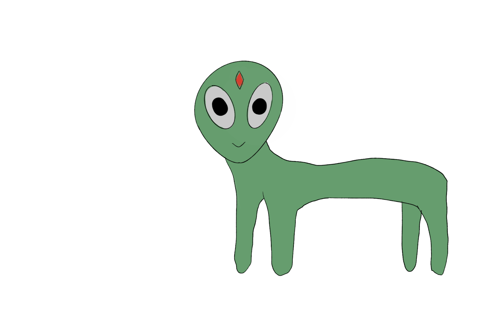

Psychan
The Psionids can pick up the tiny frequencies emitted by thought, and communicate with each other simply by thinking. Psionids share the Greek root ψυχή (psyche) with the word "psychic", which reflects their ability to read minds. Their culture is intimate and deeply interconnected.
